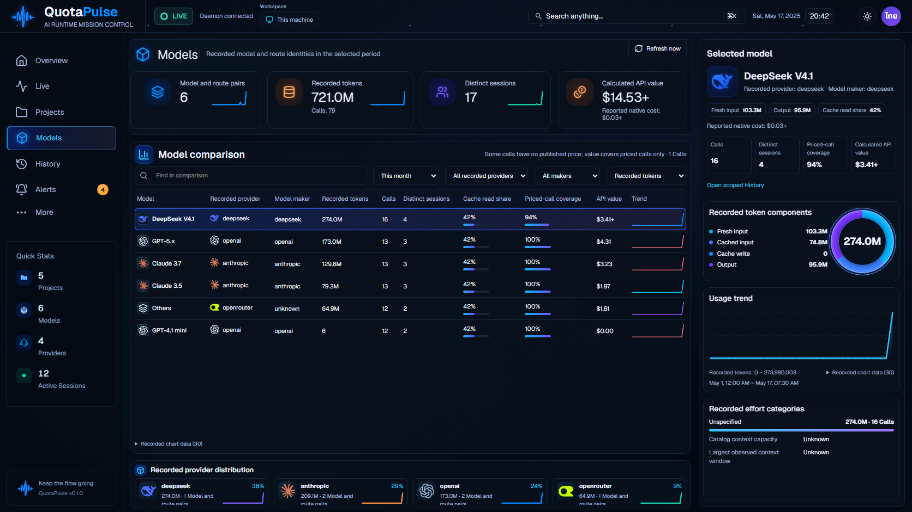
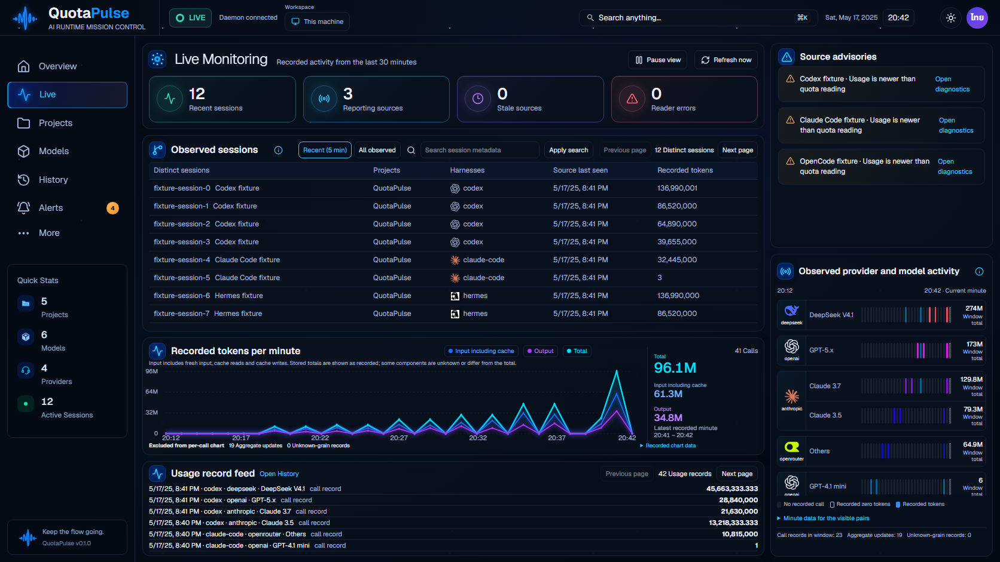

Actual application using synthetic memory API fixtures. Live unchanged; Models2sidebar pixels/max3 within unchanged tolerance. Motion does not replace original eight-page likeness acceptance. Validation | Original/current eight-page91 review

